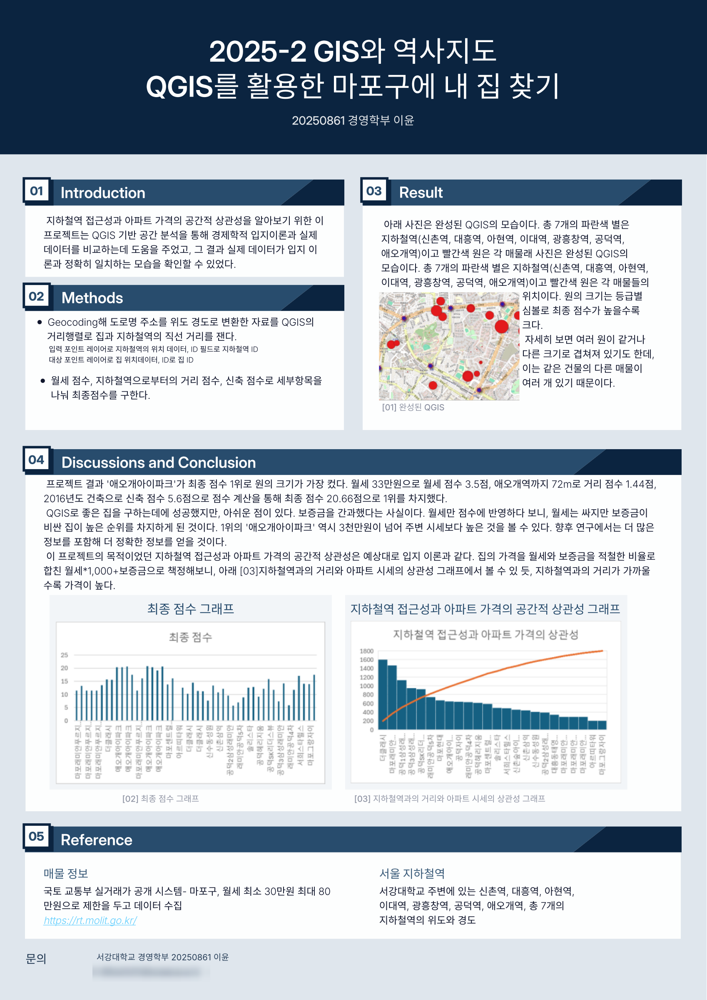
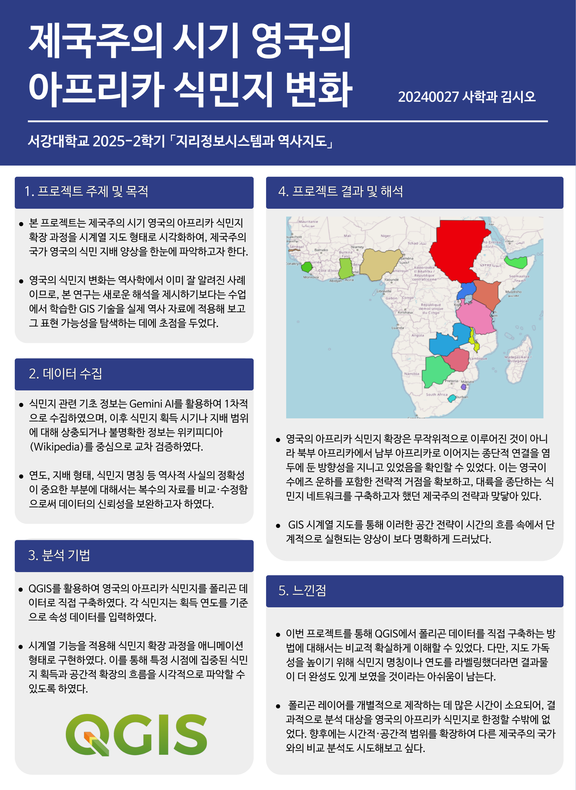
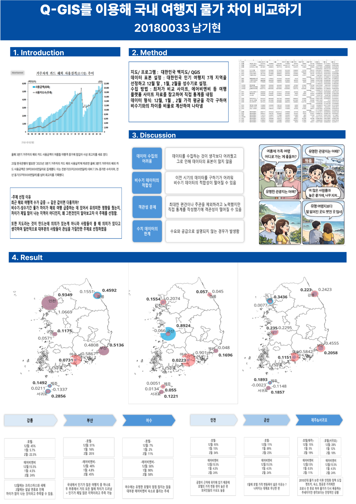
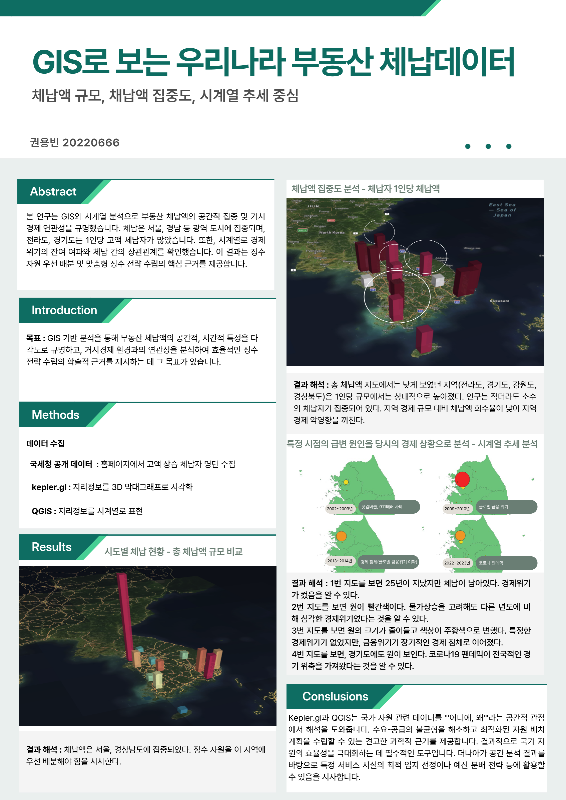
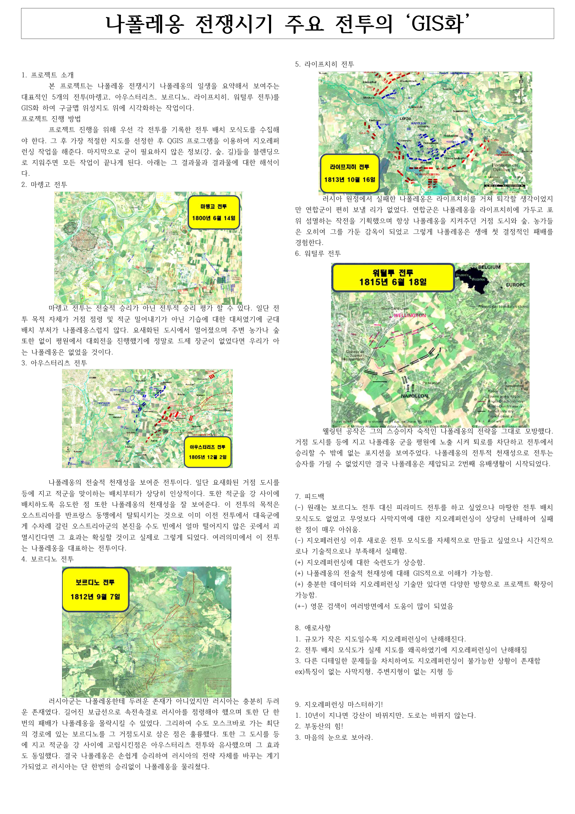
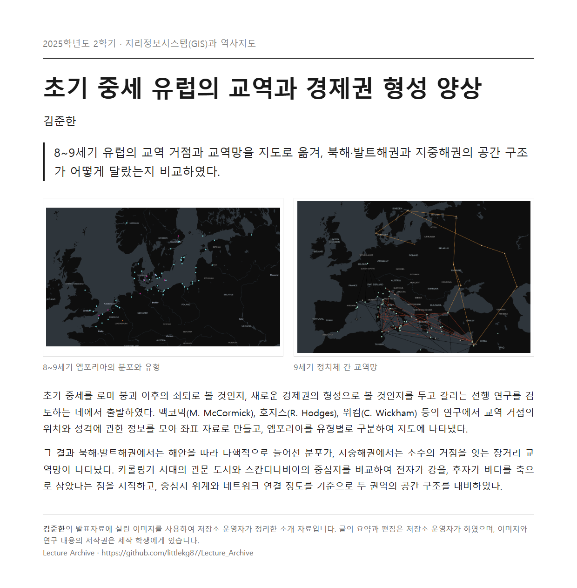

← Lecture Archive
지리정보시스템(GIS)과 역사지도
2025학년도 2학기 · 수강 인원 8명 · 게시 7편
GIS와 HGIS(Historical GIS)의 개념을 이해하고, QGIS를 이용해 역사 데이터를 공간적으로 시각화하여 각자의 역사적 질문을 분석하는 프로젝트를 수행한다.
공개에 동의한 자료만 게시하였습니다. 학술포스터 6편은 학생이 제작한 원본이며, 마지막 1편은 발표자료 형태로 제출되어 저장소 운영자가 소개 자료로 정리한 것입니다. 일부 자료에서 개인 연락처는 가려서 게시하였습니다. 저작권은 각 제작 학생에게 있습니다.

QGIS를 활용한 마포구에 내 집 찾기
이윤
마포구 임대 매물과 지하철역 사이의 거리를 QGIS로 계산하고 월세·거리·신축 여부를 점수화하여, 역과 가까울수록 가격이 높아지는 관계를 확인하였다.

제국주의 시기 영국의 아프리카 식민지 변화
김시오
영국의 아프리카 식민지를 획득 연도와 함께 폴리곤 자료로 구축하고 시계열 지도로 구현하여, 북부에서 남부로 이어지는 종단 방향의 확장을 확인하였다.

Q-GIS를 이용해 국내 여행지 물가 차이 비교하기
남기현
국내 인기 여행지 7곳의 성수기와 비수기 숙박 가격을 직접 집계하여 비율로 환산하고, 지역별 물가 변동 폭을 지도에 비교하여 나타냈다.

GIS로 보는 우리나라 부동산 체납데이터
권용빈
국세청 고액 체납자 자료를 시도별로 집계하여 kepler.gl로 3차원 시각화하고, 1인당 체납액과 시기별 추세를 경제 상황과 함께 해석하였다.

나폴레옹 전쟁시기 주요 전투의 ‘GIS화’
조원석
마렝고·아우스터리츠·보로디노·라이프치히·워털루 전투의 배치 모식도를 지오레퍼런싱하여 위성지도 위에 올리고, 지형과 전술의 관계를 검토하였다.
장애 학생의 통학 불평등에 대한 AI·데이터 기반 포용사회 전략 제안
변혜진
특수학교와 일반학교의 통학 시간 격차를 정리하고 학교 입지와 접근성을 히트맵으로 시각화하여, 입지 최적화와 위험 분석을 축으로 한 개선 방안을 제안하였다.

초기 중세 유럽의 교역과 경제권 형성 양상
소개 자료
김준한
8~9세기 유럽의 교역 거점과 교역망을 지도로 옮겨, 북해·발트해권과 지중해권의 공간 구조가 어떻게 달랐는지 비교하였다.
← 수업 목록으로 돌아가기
원본 열기
닫기 ✕
{kind=link}
{kind=link}
{kind=link}
{kind=link}
{kind=link}
{kind=link}
{kind=link}